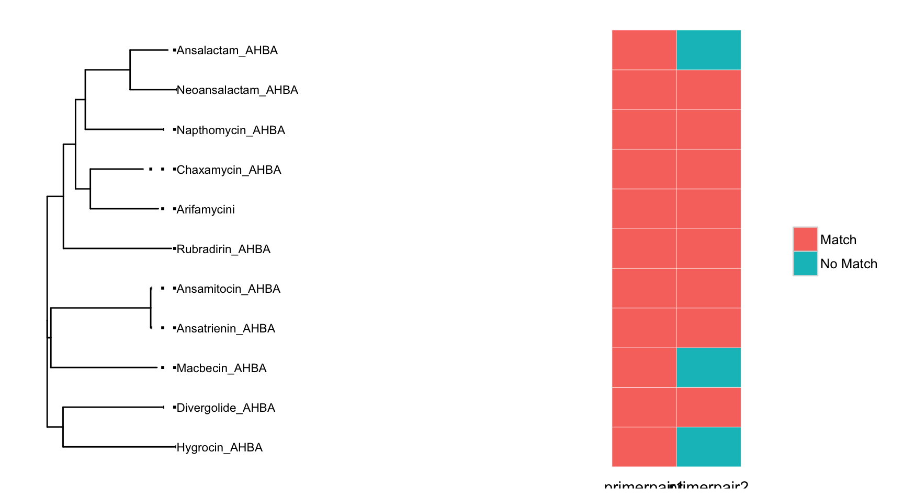
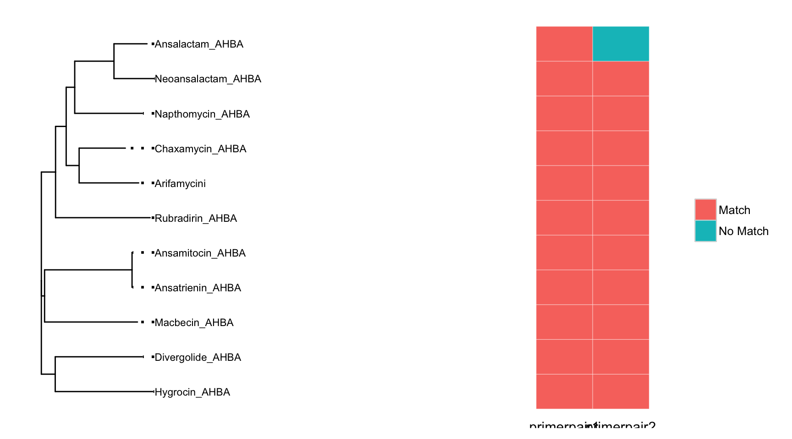
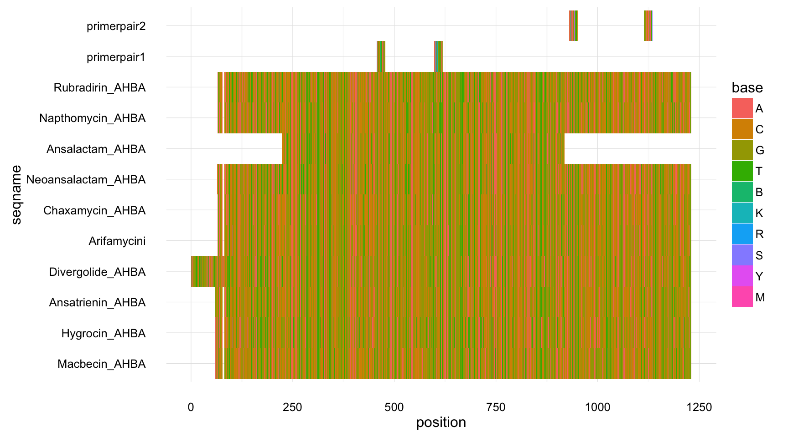
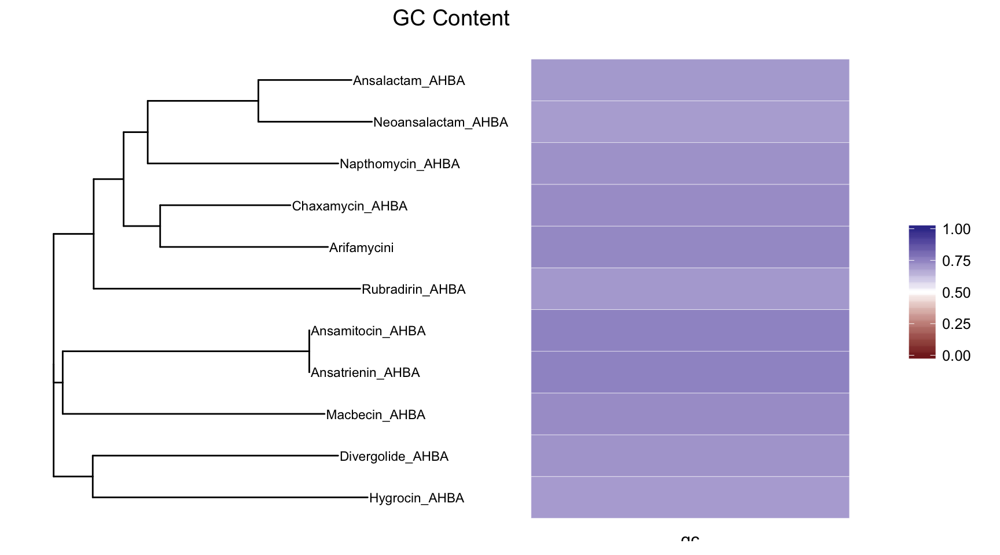

The DegeneratePrimerTools R-package. Facilitating amplicon analsysis of the metagenome
zachcp
2016-10-20
Overview
DegeneratePrimerTools (DPT) is a package that facilitates degenerate primer design. DPT facilitates the retrieval of DNA sequences defined by a conserved PFAM domain and provides several classes for associating sequence data with alignments, trees and primer pairs. DPT uses the DEGEPRIME program for primer design, an heavily uses the Bioconductor ecosystem for its data structures.
Basic Usage
In this vignette, a user has a set of DNA sequences for which he would like to design primers. The workflow can be seen here with am ore detailed explanation below.
library(dplyr)
library(DegeneratePrimerTools)
# load sequences
ahbafna <- system.file("sequences/AHBA.fna",package="DegeneratePrimerTools")
AHBAseqs <- Biostrings::readDNAStringSet(ahbafna)
# run alignment, create tree, run DEGEPRIME on the MSA
AHBA_degeprimer <- degeprimer(AHBAseqs) %>%
run_alignment() %>%
build_tree() %>%
design_primers( maxdegeneracies=c(1, 10, 20), number_iterations=2) # this can take awhile## use default substitution matrixAt this point, AHBA_degeprimer is an object that holds the original sequence information, the multiple sequence alignment, a phylogenetic tree of those sequences, and the DEGEPRIME primer design table. DEEPRIME has walked along the multiple sequence alignment and determined, for each location in the MSA, a degenerate primer that maximizes the coverage of sequences in the alignment that has a degeneracy value less than what is specified. In this case we ran DEGEPRIME twice, using maximum degeneracy values of 1 and 10.
A user must now choose which primer pair to use given all the possible choices provided by DEGEPRIME. To assist in this process, DPT includes a Shiny app that visualizes potential degenerate primers by plotting each primer as point where the x-axis is the position along the ungapped MSA, and the height is the percentage of sequences in the MSA that is covered by that primer.
Interactively Choose Primers
AHBA_degeprimer %>% choose_primer()
The screenshot above shows the interactive plot. A user interested in finding primers that amplify the maximum number of sequences in a given target can then choose the peaks. After a user chooses a peaks, the information about the selected points is returned to the console where a user can see the primer sequence as well as information about the position in the MSA, the degeneracy and other fields.
Add Primer Pairs to the Object
Interactive inspection of primer pairs is used to select primers. users can use that information and design their own primers or they can explore the coverage of their primers across their target sequences. In the primerdata table that is the output of DEGEPRIME, each primer can be uniquely identified by a the position along the multiple sequence alignment and the maximum degeneracy value passed to the DEGEPRIME command line. We can therefore specify a primer pair by providing these two values for the forward and reverse primers.
AHBA_degeprimer <- AHBA_degeprimer %>%
add_primerpair(name="primerpair1", fpos=455, fdeg=10, rpos=617, rdeg=10) %>%
add_primerpair(name="primerpair2", fpos=928, fdeg=10, rpos=1133, rdeg=10)Plot Coverage
Once primers are chosen it is desirable to view coverage of the target sequences. The plot_coveragematrix will calculate expected coverage of each primerpair in the degeprimer object by searching for exact matches of the forward and reverse primers against your target sequences. The most important parameter, is the max.mismatch which determines how many nucleotide differences are allowable between the degenerate primer and the target sequence.
plot_coveragematrix(AHBA_degeprimer,max.mismatch = 0, offset=0.5)
plot_coveragematrix(AHBA_degeprimer,max.mismatch = 3, offset=0.5)
Plot Primer Locations
Gives and overview of where your primers are and what the coverage is.
msa1 <- add_primers_to_MSA(AHBA_degeprimer)
plot_msa(msa1)## 1453-letter "DNAString" instance
## seq: ----------------------------------...---------------------------------
## [1] "Macbecin_AHBA"
## 1453-letter "DNAString" instance
## seq: ----------------------------------...---------------------------------
## [1] "Hygrocin_AHBA"
## 1453-letter "DNAString" instance
## seq: ----------------------------------...---------------------------------
## [1] "Ansatrienin_AHBA"
## 1453-letter "DNAString" instance
## seq: ATGACGAGAGGTTTTCACCCTGGTTATCGTGCGG...---------------------------------
## [1] "Divergolide_AHBA"
## 1453-letter "DNAString" instance
## seq: ----------------------------------...---------------------------------
## [1] "Arifamycini"
## 1453-letter "DNAString" instance
## seq: ----------------------------------...---------------------------------
## [1] "Chaxamycin_AHBA"
## 1453-letter "DNAString" instance
## seq: ----------------------------------...---------------------------------
## [1] "Neoansalactam_AHBA"
## 1453-letter "DNAString" instance
## seq: ----------------------------------...---------------------------------
## [1] "Ansalactam_AHBA"
## 1453-letter "DNAString" instance
## seq: ----------------------------------...---------------------------------
## [1] "Napthomycin_AHBA"
## 1453-letter "DNAString" instance
## seq: ----------------------------------...---------------------------------
## [1] "Rubradirin_AHBA"
## 1453-letter "DNAString" instance
## seq: ----------------------------------...---------------------------------
## [1] "primerpair1"
## 1453-letter "DNAString" instance
## seq: ----------------------------------...---------------------------------
## [1] "primerpair2"
Extra Plotting Functions
Plot GC Content
Plot the GC Content of your Sequences.
plot_GC(AHBA_degeprimer)
Sequence Retrieval of PFAM Domain sequences.
While many degenerate primer design projects are begun with sequences in mind, in many cases involving metagenomes, you may wish to design primers to maximize coverage to a target with only a few initial sequences. DegeneratePrimerTools provides helper functions to retrieve DNA sequences corresponding to the conserved PFAM domain protein sequences. To retrieve all DNA sequences that encode the PFAM16997 domain, for example, you could do the following:
PF16997dna <- retrieve_PFAM_nucleotide_sequences("PF16997")The result, PF16997dna is a Biostring DNAStringSet. Under the hood, this function:
- retrieves PFAM domain information via the RET api
- parses the identifiers and locations
- maps the UNIPROT protein accessions to ENA nucleotide accessions
- retrieves the ENA nucleotide accessions.
- Extracts the regions of the DNA sequences corresponding to the protein domain.
Because of this workflow the default PFAM alignment type that is retrieved is the “uniprot” alignment corresponding to all matches of the PFAM HMM against the full UNIPROT reference set. All of the publicly available options - “seed”, rp15“,”meta" etc - are supported but in the case of large alignments (eg. the “NCBI” alignments), the PFAM website may not serve these files. In this case it will be necessary to download the full dataset from the PFAM FTP site and parse these accessions directly.
As a workflow for the retrieval you could use a variation of the following:
PF16997dna <- retrieve_PFAM_nucleotide_sequences("PF16997")
PF16997degeprime <- degeprimer(PF16997dna)%>%
run_alignment() %>%
build_tree() %>%
design_primers( maxdegeneracies=c(1, 10, 20), number_iterations=2) # this can take awhileClasses
DegeneratePrimerTools uses several classes that encapsulate data. These are the following:
The primerdata class. This class is used internally by DPT to ensure that the tabular output from the DEGEPRIME cli interface is of the expected shape.
The primerpair class allows you define forward and reverse primer pairs.
The degeprimer class. This is the class holding slots for nucleic acid sequence data, multiple sequence alignments, phylogenetic trees, primerdata DEGEPRIME tabular output and a list of priemrpairs.
By providing a single object that contains all of the data, we can provide a standard interface for processing data via pipes as well as provide a single target for visualization functions.
References
Robert C Gentleman, Vincent J. Carey, Douglas M. Bates, et al. Bioconductor: Open software development for computational biology and bioinformatics. Genome Biology 5:R80, 2004.
Luisa W. Hugertha, Hugo A. Weferb, Sverker Lundina, et al. DegePrime, a program for degenerate primer design for broad-taxonomic-range PCR in microbial ecology studies. Appl Environ Microbiol 2014 Aug;80(16):5116-23.